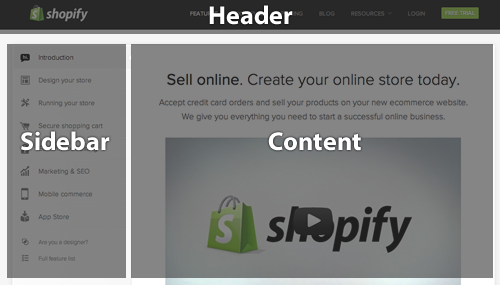

SMACSS
Scalable and modular CSS
Created by Alain Hornair / @elHornair
This is not a conference
- Down: I'm not perfectly prepared. Sorry for that
- Up: You can ask questions / share your thoughts at any time. Let's discuss!
Kudos
SMACSS was created by Jonathan Snook. He has around 20 years of experience with frondend development. He has written many articles and multiple books. He worked at Yahoo, redesigning Yahoo! Mail.
tl;dr: He knows what he's talking about. You must follow him on Twitter
Where are we?
- 90+% of web applications use CSS
- Many of them use lots of CSS
- Complexity
- Not much thinking is put into the CSS
- Result: The CSS is a mess
But wait...
- PHP / Ruby / Python / JavaScript is complex as well
- Why is this code (sometimes) not a mess?
- Architecture
- Design patterns
What's SMACSS?
- Style guide
- Collection of CSS design patterns
- What it isn't: A library or a framework
Basics
- Split CSS into multiple files
- What goes where?
What goes where?
- 5 categories of CSS rules:
- Base
- Layout
- Module
- State
- Theme
- Each category in it's own file
- Each module in it's own file
- Let's go through these categories in detail
Base
- Default styling of your app
- General typography (h1, a, p, ...)
- Element selectors and pseudo classes only
- No class or ID selectors
- CSS resets
Base
Code example:
body, form {
margin: 0;
padding: 0;
}
a {
color: blue;
}
a:hover {
color: green;
}
Layout
- Mayor components
- Mainly ID selectors
- Dedicated HTML elements like "header" or "footer"
Layout
Example:
Layout
Code example:
#header, #section, #footer {
width: 960px;
margin: auto;
}
#section {
border: 1px solid #CCC;
}
Layout
- CSS selectors for different kinds of layouts
- E.g. "wide" and "normal" layout
Layout
Code example:
#section {
width: 100%;
}
.wide #section {
width: 80%;
float: left;
}
Module
- Standalone component
- Can be used at multiple places
- Examples:
- Slideshow
- Dialog
- Navigation bar
- ...
- Modules can be nested
- Everything wrapped in CSS class
Module
Code example:
.my_module {
background-color: red;
}
Module
- Use classes for descendants where possible
- Elements are ok as well
- ID's are not ok (portability!)
- Use direct descendant selector (>) by default
Module
Code example:
.my_module {
background-color: red;
}
.my_module > h2 {
color: blue;
}
Module namespacing
- Namespacing modules
- Descending classes are prefixed with module name
- Portability: what if the module occurs inside another module?
- Explicity: It's not just a title. It's the title of a dialog
Module namespacing
Code example:
.dialog {
background-color: red;
}
.dialog > dialog-title {
color: blue;
}
Module subclassing
- For different versions of the same module
-
Example
- main navigation and language switcher
- Both share font-family and colors
- However: different font-size
- HTML: Both, module and submodule class get added to the container element
Module subclassing
Code example:
<ul class="nav">
<li>One</li>
<li>Two</li>
</ul>
<ul class="nav nav-lang">
<li>DE</li>
<li>FR</li>
</ul>
.nav {
font-family: Arial;
font-color: white;
font-size: 2em;
}
.nav.nav-lang {
font-size: 1.6em;
}
Module subclassing
- Context of modules
- Example: slideshow has to look different on homepage

Module subclassing
- What pops to mind: ".content_home .slideshow"
- Better: subclass
- Portability: slideshow on contact page looks the same?
- Independence: What if someone decides to remove the ".content_home" class?
- Encapsulation: All info within module container
- However: more work in the backend
Module subclassing
Bad example:
.slideshow {
width: 480px;
}
.content_home .slideshow {
width: 100%;
}
Good example:
.slideshow {
width: 480px;
}
.slideshow.slideshow-fullwidth {
width: 100%;
}
State
- State of the application
- State of a module
- Prefix with "is-"
- Examples:
- is-hidden
- is-active
- is-collapsed
- Layout specific states: state.css
- Module specific states: module file
- State classes: layout element or module container only
State
Code example:
<div class="folder is-collapsed"></div>
.folder {
width: 100%;
height: auto;
}
.folder.is-collapsed {
height: 100px;
overflow: hidden;
}
Misc / Summary
- Avoid !important
- Never use !important in a base rule
- Ever!
- Use ID selectors in "layout.css" only
- Base modules on class selectors (only)
- Refactor often
A few things on preprocessors
- Up: preprocessors CAN make our life easier
- Down: preprocessors do not avoid a CSS mess
A few things on preprocessors
- Use nesting for subclasses
- Use nesting for things inside of a module
- Avoid too many nesting levels
- Use variables for colors, dimensions, ...
- Use mixin functions for reoccuring rule sets
- Use mixins for vendor-prefixed stuff
A few things on preprocessors
Code example:
.slideshow {
width: 480px;
>.slideshow-title {
color: @secondaryColor;
}
&.slideshow-fullwidth {
width: 100%;
}
}
A few things on Media Queries
- Your application can have multiple Media Queries
- Each module has it's own Media Query
- Nest Media Queries with LESS/SASS
- Use variables for dimension thresholds
A few things on Media Queries
Code example:
.slideshow {
width: 100%;
@media screen and (min-width: @tabletMinSize) {
.slideshow {
width: 320px;
float: left;
}
}
}
Thanks!
Alain Hornair / @elHornair